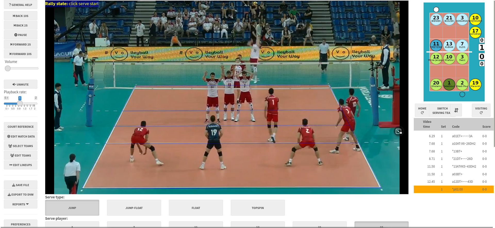

About
This R package provides a Shiny app for scouting volleyball matches to produce detailed data files. It is free and open-source, with similar functionality to the commercial DataVolley and VolleyStation software packages.

Scouting can be done either with a guided point-and-click interface, or by typing.
Click-scouting principles
- scouting is always done from video, even when scouting a live match (though this is technically a bit tricky to set up). The hope is that the scouting process is fast enough to be “nearly real time” - while the scout might lag behind the real action at times, they can catch up at the ends of rallies or other breaks in play
- by registering the corners of the court before scouting, we can map the court image to real-world court space. Clicking a location on the video can then be converted to its corresponding court coordinates
- each ball touch is registered by clicking its location on screen. With a touch-screen device, this click interface can be reasonably fast
- to make the process faster and easier the app tries to pre-fill as much information as it can at each data entry step. It will learn a team’s patterns of play, so that it can suggest the most likely player to have attacked, passed or dug a certain ball
Scouting by typing
- similar to the scouting interface through commercial software such as DataVolley or VolleyStation
- allows fast data entry, and can be used without a video if desired (this allows live matches can be scouted in real time by a scout who is physically present at the arena, without having to muck around with live video feeds)
- BUT type-scouting comes with a steep learning curve, which is why the click-scouting interface exists.
The click-scouting interface is for users who aren’t proficient with the keyboard interface. While there are many tablet- and phone-based scouting apps that also use a click-style interface, ovscout2 provides more complete match data that is fully dvw compatible and can be used for advanced statistical analysis, and yet (we hope) remains easy to use.
Features of click-scouting
- a guided scouting interface that is easy to learn and ensures consistent data collection
- the interface can be tailored for simple or advanced scouting, with more details in the latter
- all contacts are recorded with precise locations (coordinates) as well as zones and subzones
- experimental support for dual match video cameras (one from either end of the court)
After you’ve scouted your match video, the data can be analyzed with the openvolley suite of R packages, or with any other volleyball analytics software that takes dvw files as inputs.
Installation
If you are not an R user, see the user manual for standalone installers.
Otherwise:
install.packages("ovscout2", repos = c("https://openvolley.r-universe.dev",
"https://cloud.r-project.org"))
## or
## install.packages("remotes") ## if needed
remotes::install_github("openvolley/ovscout2")Two other system utilities are recommended but not required:
pandoc is required for generating match reports. If not present, the report generation menu won’t be shown. If you are using RStudio, you do not need to install pandoc because RStudio comes bundled with its own copy. Otherwise install following https://github.com/jgm/pandoc/blob/master/INSTALL.md.
lighttpd is a lightweight web server that is used to play the match video (when using a local video file). Install (from within R, on Windows only) using
ovscout2::ov_install_lighttpd()or manually from http://lighttpd.dtech.hu/ (for Windows) or via your package manager for other operating systems (see https://redmine.lighttpd.net/projects/lighttpd/wiki/GetLighttpd). Iflighttpdis not installed, the app falls back to servr but this is a little slower and less responsive thanlighttpd.
Usage
To try it on a short match video clip:
ov_scouter_demo()To use with your own data:
ov_scouter(video_file = "/path/to/video.mp4",
season_dir = "/path/to/existing/files")If you don’t provide the video file path, it will pop up a file navigator for you to select one. The season directory (a directory containing existing .dvw or .ovs files) can also optionally be provided. If a new match is being scouted, the teams can be selected from those in the season directory. You can also provide it with a partially-scouted .dvw or .ovs file, to continue scouting where you left off.
See help("ov_scouter") for more options, or the user manual.